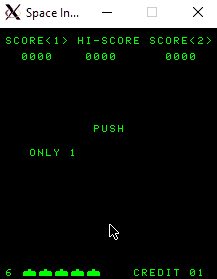

|
8080-Emulator
0.1
An Intel 8080 emulator for Space Invaders
|
This repo contains worked out tutorials to learn software emulation. The main goal is to write a C based functional 8080 emulator. Post which we will move to emulation Nintendo's GameBoy in a separate Repo (or playstation maybe).
For now, let's get going with the tutorials on Emulator 101.
Note: These might changes as I learn more and currently may not be the best way to go about things.
But really what is?
ls /our_future:

Let's start by following the Steps on Emulator 101.
Critical: Do not look at this until necessary, but here's a completed version I came across this tutorial. But the Useful links section is actually quite useful.
Emulator 101's Opcode is linked here. But IMO, it gives too much away. There's always the 8080 system manual, but that might be a little too much so let's keep it aside for now. I think referring to below links would be more work and fruitful:
To top it off, this programming manual seems quite useful, and small enough for now.
The tutorial starts by mentioning guides such as above, then says to go find the ROM. Here's what I got:
Next, I would recommend you to read the programming manual (91 Page one). The first 2 chapters should be enough for now. By now it would have struck you:
write a disassembler -> call C equivalents for those assembly instructions.Note: While these are important individual steps, we'll go in a manner where we just implement enough to get started with the next step and then keep coming back for extensions. This is an important part of rapid prototype dev which I've been lacking in and is very much needed in today's world. So let's practice that!
Well, let's get started. We'll first do an overall instruction base like disass_1. Then We'll follow the order of the posts, cross-referring with Chapter 4 in the system manual. At the same time, we'll be using the ROM itself to figure out which instruction to emulate next. When we run the ROM and something doesn't work, that's the instruction to figure out! Just exec the ROM unless you hit an instruction that you've not implemented yet. Implement, then keep going.
Below is a example of decompile mode:
Once you implement all the instructions, how do you know if you've implemented the instructions correctly? Well as described in finishing-cpu and full-emulation, there are two major ways:
At this point, let's assume we have a fully functioning emulator. Well, do we? Currently, our code runs at full speed, trying to get the instructions executed as fast as possible. This historically hasn't been the best for games. If you run your code right now, you'll notice that it's stuck in a loop WaitOnDelay. It would be helpful to look at reverse engineering of the code, and probably you'll be waiting for the isrDelay variable. But what is that anyway?
Timing in Space Invaders: So the question to ask here would be:
Who in the world updates this memory location?
I would encourage you to look at the code and find out the answer. Try Ctrl+F for isrDelay, or &isrDelay.
Okay, space invaders makes use of an external Interrupt to do the timing. Via the experiment above, you would have noticed that the memory location 20C0 isrDelay, is updated at address: 0019 which is part of ScanLine224. Now would be a great time to read the hardware configuration of SpaceInvaders, since it will be very relevant now.
You see, there's an external interrupt every 1/2 frame point, where the frame rate is 60Hz. This basically is a clock that triggers the RST command by setting the condition flag. Here's a snippet of the main code doing it.
Don't worry about the SDL_USEREVENT stuff. It's just a way to create user-generated events using a timer. Exec loop consuming the interrupt flag. This enables us to implement a CPU unbound timer!
Now you shouldn't be stuck in the loop anymore. Okay at this point, we have the major things in place. Some visual output would be nice. Let's have a look.
For GUI, I used SDL2. Mainly because it has a C API and integrates nicely with our existing code. You might want to the following tutorials which might prove to be handy:
Few points of advice:
PORT IO section too, after which it will make more sense.While working on the SDL2 GUI, you'll realize that to draw properly and efficiently, the game logic makes use of shift registers. But hold on a minute pandu, there are no registers in Intel 8080! You're right, that's why on out the PORT IO is used for that purpose. You can find more information here.
Other than those clever shift registers, the rest should be good to implement. you might wanna hotwire the IN and OUT instructions to custom versions that support the behavior specified here.
Feel free to look through the code if you want to look at a not so simple but interesting way of implementing it using functors. I intended to keep the code generic while supporting this idea. I think it's pretty neat. Setting IN/OUT backing stores correctly should allow your game to read keypresses and produce sound.
In order to run the code on your ubuntu box:
make install - Install the packages requiredmake extractROM - Unzip the ROMmake DEBUG=0 DECOMPILE=0 - Run the Emulator